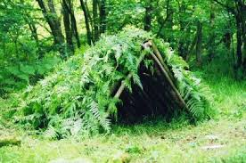
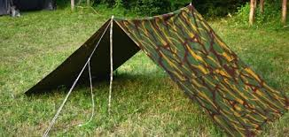

jungle survival
Membuat bivak atau shelter sangatlah penting bagi para penjelajah alam sebagai tempat beristirahat maupun berlindung pada saat keadaan darurat, akan tetapi dalam keadaan yang terpaksa atau darurat seperti ini dan karena tidak adanya tenda dan peralatan yang memadai maka kita dapat membuat shelter dari alam yang biasa disebut bivak.
Bivak dibuat bertujuan untuk melindungi diri dari cuaca panas, hujan, dingin, angin, gangguan binatang, dan lain sebagainya. Bivak sendiri terbagi menjadi 2 macam, yaitu bivak alam dan bivak buatan.
bivak alam adalah bivak yang terbentuk karena alam atau alami dan kita dapat memanfaatkannya sebagai tempat berlindung. Contohnya :
a. Bough Shelter (Bivak dari cabang pohon)
b. Root Shelter (Bivak dari akar pohon)
c. Natural Hollow (Bivak dari lubang alami atau Gua)
d. Stone Barrier (Bivak dari gundukan batu)
e. Sapling Shelter (Bivak dari pohon pohon muda)
f. Hasty Shelter (Bivak Sementara)
Bivak buatan adalah bivak yang dibuat oleh tangan manusia, dan bivak buatan dapat didirikan dengan memanfaatkan bahan-bahan alam dan bahan-bahan yang kita bawa. Contohnya :
a. Shelter Sheet (Bivak dari lembaran plastik, ponco, ataupun flysheet)
b. Dan lain sebagainya.
Berikut adalah contoh bivak baik itu bivak alam maupun bivak buatan


Syarat membuat bivak yaitu:
1. Hindari daerah aliran air. (Bila terpaksa maka gunakan bivak panggung)
2. Di atas bivak tidak ada dahan pohon yang mati atau rapuh.
3. Pastikan disekitar anda tidak ada sarang hewan atau serangga.
4. Bahan yang digunakan untuk membuat bivak kokoh dan kuat.
5. Terlindung langsung dari angin.